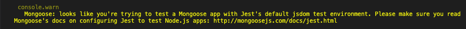
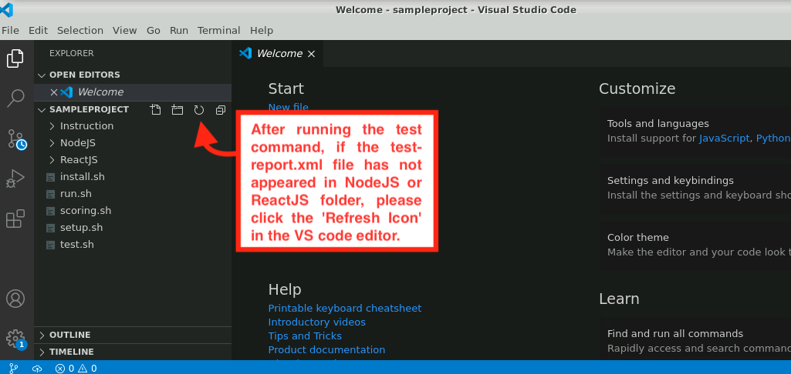
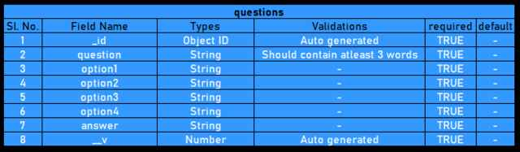

MERN - Quiz App:
Note:
- Execute the sh run.sh command, from the
wings-reactnode-quizapp directory, to run the Full Stack application.
- Execute the sh test.sh command, from the
wings-reactnode-quizapp directory, to test the Full Stack application.
- Kindly ignore the following warning message while running the test command.

- After running the test command, if the test-report.xml file has not appeared either in NodeJS or ReactJS
folder or both, please click the 'Refresh Icon' in the VS code editor.

- Kindly use fetch api for integration.
FRONT-END: ReactJS
- This application uses ReactJS as the front-end. Fix the test case errors in the application. The test cases
are
written
in Jest.
- This application consists of two components. One is 'Questions', which will be the parent component, and
another one is 'QuestionCard', which will be the child component.
Questions Component
- Write code in ReactJS/src/Components/Questions.js.
- This component has QuestionCard as the child component.
- On mounting the data should be fetched from back-end and pass it as a prop to the child component.
- Clicking the 'Reset' button in the header should reset the questions to the initial state.
- On clicking the 'Submit' button in the QuestionCard component, the question IDs and the
answers for all questions should be sent as an array to the back-end to validate and generate the score.
- The back-end generated score should be displayed to the user as 'You Have Scored [score]%'.
- All functions and data for the child component should be passed as props.
Question Card Component
- Write code in ReactJS/src/Components/QuestionCard.js
- The questions which are fetched from back-end will be passed as a prop from the parent component.
- This component will display a question with four options.
- Question number should be displayed as 'Question [present question number]/[total number of questions]''.
- For all questions except last one, the 'Next' button should be displayed.
- For the last question, the 'Submit' buttons should be displayed.
- On clicking the 'Next' button, the component should display the next consecutive question.
- 'Kindly select your answer' message should be displayed when the user clicks the 'Next'
button without
selecting any of the options.
- On clicking the 'Submit' button, the score should be displayed.
BACK-END: NodeJS
- For back-end purposes, you have to make use of NodeJS and MongoDB.
- quiz-app is the name of the database you will be using in this application.
- There is a single collection, namely questions inside the database
quiz-app.
Collections:
There is a single file for collection, namely questions.js, that
resides inside NodeJS/src/mongoose/models. The
schema for the collection is given as follows.

Routers:
There is a single router file user.js that reside inside NodeJS/src/routers.
The endpoints of the
router and its
functionalities are given as follows.
1)/users/questions/view -> GET Method -> This route should get all the
questions from
the questions collection.
If the data is fetched correctly, you should send the data as a response with a status code
'200 ok'.
If something goes wrong, you should send a response code '400 bad request' back.
Sample response:
[
{
"_id" : "5f5f4a82e5d89933ad16d3dc",
"question" : "Angular is used for ____",
"option1" : "back-end",
"option2" : "front-end",
"option3" : "data analysis",
"option4" : "artificial intelligence",
"answer" : "option2",
"__v" : 0
},
{
"_id" : "5f5f4a82e5d89933ad16d3dd",
"question" : "Angular cannot be integrated with ____",
"option1" : "Node.js",
"option2" : "Springboot",
"option3" : "All the above",
"option4" : "None of these",
"answer" : "option4",
"__v" : 0
},
{
"_id" : "5f5f4a82e5d89933ad16d3de",
"question" : "Angular is based on ____",
"option1" : "components",
"option2" : "TypeScripts",
"option3" : "containers",
"option4" : "classes",
"answer" : "option2",
"__v" : 0
}
]
2)/users/questions/getScore -> POST Method -> In this route, you will
get a request body containing an array of objects with _id and answer selected by the user. You should check
whether the answers are correct for the respective _id in the questions collection. For every correct answer,
increment the score by one.
Data sent with request:
[
{
_id: 5f560b612103a313107c60a8,
answer: option2
},
{
_id: 5f5734810770971c782497c3,
answer: option1
},
{
_id: 5f5735700770971c782497c4,
answer: option1
}
]
- The answers for the questions with question _id 5f560b612103a313107c60a8, 5f5734810770971c782497c3 and
5f5735700770971c782497c4 should be compared with the respective answers sent with the request body.
- For every instance where both the answers match, you should increase the score by 1.
- Then you should find the percentage of the score with the score obtained and the total number of questions
(here, the total number of questions is 3).
- Consider two answers in the sample data sent with the request are correct. Then, you should calculate the
score as (2/3) * 100 = 66.
- Therefore you should give a response as shown as follows with a status code of '200 ok'.
- If something goes wrong, you should send a response code of '400 bad request' back.
{
"percentage": 66
}
MongoDB Commands
- You can open the mongo shell by running mongo from the terminal.
- You can view all the databases in MongoDB by running show
dbs from the mongo shell.
- You can select the database by running use quiz-app.
- You can view the names of collections by running show collections.
- You can view the data inside a collection by running db.collection_name.find().
- Press ctrl+c to exit.